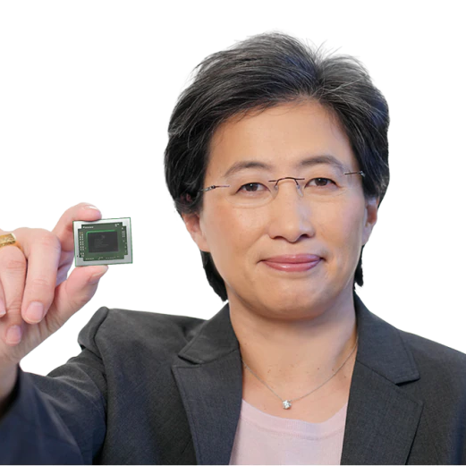

La Dra. Lisa Su es una ingeniera eléctrica y ejecutiva reconocida a nivel mundial. Es presidenta y directora ejecutiva de AMD, una de las empresas más importantes en la industria de semiconductores. Su liderazgo ha sido clave para el crecimiento y posicionamiento de la compañía.

Gracias a su gestión, AMD ha logrado competir directamente con grandes empresas tecnológicas. Ha impulsado el desarrollo de procesadores de alto rendimiento y eficiencia. Su trabajo la ha convertido en una de las mujeres más influyentes en el ámbito tecnológico.